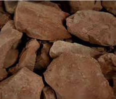
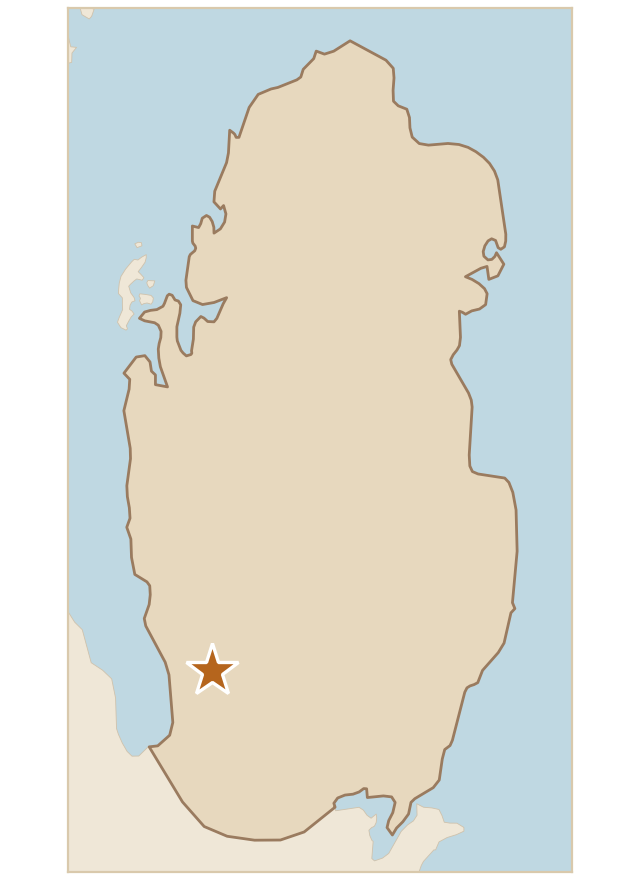

تربة طينية، لونها بني يميل إلى الاحمرار، مما يشير إلى محتوى عالٍ من أكاسيد الحديد، كما أنها مكونة من كتل كبيرة ومتجانسة، مما يشير إلى تكوين غني بالطين أو التربة اللاتريتية، وهي نموذجية للتربة المتكونة في المناخات الدافئة والرطبة.
Clay soil, brown tending to reddish, which indicates a high content of iron oxides. It is made up of large, uniform lumps, which indicates a formation rich in clay or lateritic soil, and it is typical of soil formed in warm, humid climates.